로봇 · 제어 · 자동화
Portfolio.
조병현
AI융합 로봇 SW 개발기계공학을 바탕으로
로봇 제어·학습·자동화를
구현합니다.
EDUCATION
서울대학교 기계항공공학부
우주항공공학전공 학사
TRAINING & LANGUAGE
대한상공회의소 서울기술교육센터
AI융합 로봇 SW 개발자 과정 이수
로봇 · 제어 · 자동화
기계공학을 바탕으로
로봇 제어·학습·자동화를
구현합니다.
서울대학교 기계항공공학부
우주항공공학전공 학사
대한상공회의소 서울기술교육센터
AI융합 로봇 SW 개발자 과정 이수
Selected Works.
비전·학습 모델을 로봇 제어와 연결하고,
시뮬레이션과 실물에서 동작 조건을 확인했습니다.
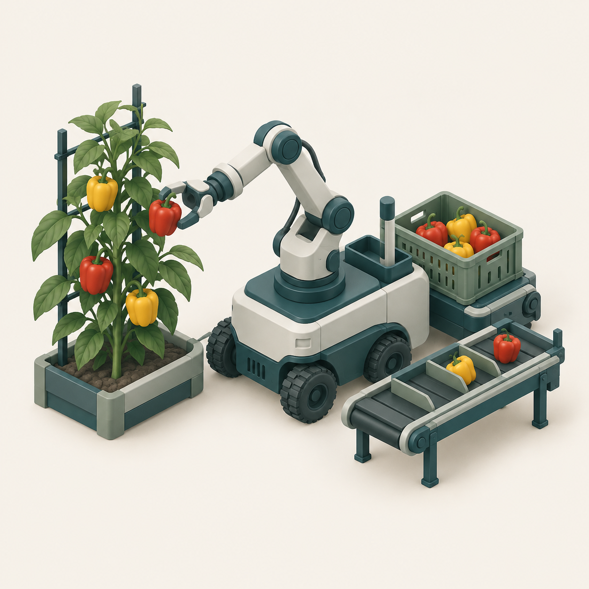
파프리카 수확·운반·선별
ROS 2 · Isaac Lab · PPO03–04수확 로봇팔 제어·학습, 기구 설계
선별장 비전·티칭·통신 연동
수확 정책의 단계별 평가
실물 선별장 통합 시험
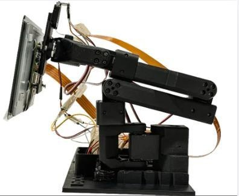
자세 인식·자동형 모니터암
MediaPipe · GRU · TensorFlow Lite05–06자세 AI, 모니터암 앞뒤 제어
하드웨어 모델링
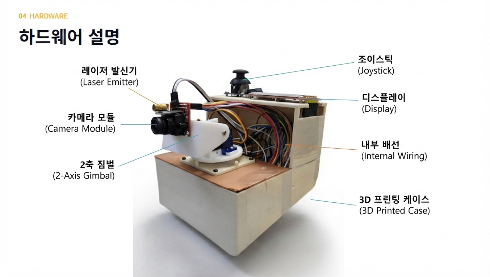
드론 추적 장치
STM32 · PWM · PyBullet07모터 제어, 시뮬레이션
3D 프린팅
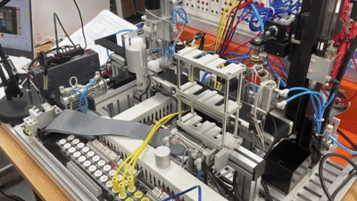
자동 분류·창고관리
MELSEC PLC · GX Works2 · 시퀀스 제어08전체 시퀀스 프로그래밍
복귀 위치·공급 순서 개선
상태별 분기 구현
동일 시나리오 합산시간 단축
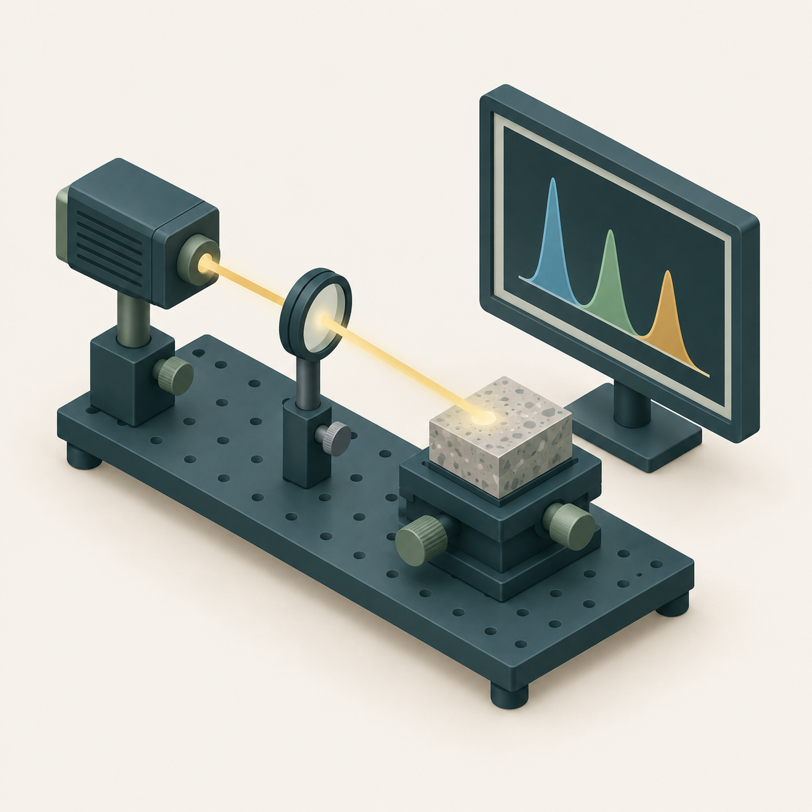
서울대학교 고에너지응용연구실
MATLAB · CNN · 학습 설정 튜닝09 · 2020.07–12 인턴스펙트럼 전처리
분류 모델링·튜닝
MATLAB 데이터 처리
분류 모델 개선
파프리카 수확·운반·선별 자동화
수확 로봇팔 모델링·제어·학습/박스·장착부 설계/선별장 티칭·비전·통신 연동
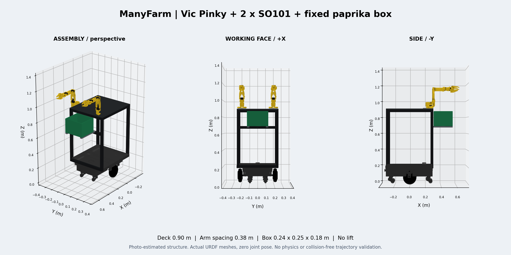
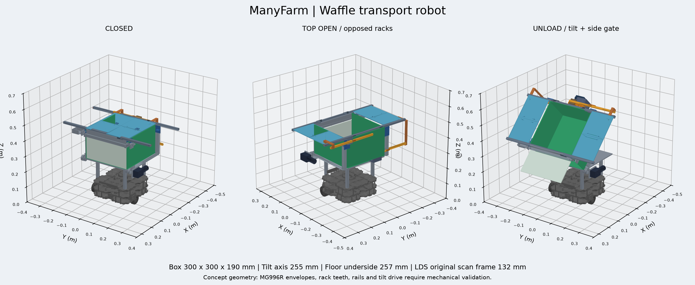
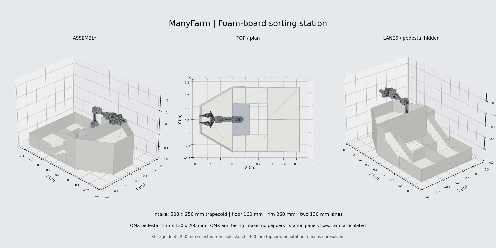
URDF는 로봇의 구조와 관절을 정의한 모델입니다. 위 선별장 모델은 초기 설계이며, 현재 HCR-3A 실물 구성은 다음 페이지에 표시했습니다.
SO-101 로봇팔의 모델링과 제어·학습을 맡아, 과실에 접근하고 잡고 당기는 동작을 학습하도록 Isaac Lab 환경과 정책을 구성했습니다.
양팔·박스 모델을 구성했습니다. 베이스와 다른 팔을 고정한 단일 팔 학습에 팀의 농장·작물 자산을 연결했습니다.
접근·파지·보유·당기기·적재로 나눴습니다. 관절·과실 상태 입력과 관절·그리퍼 출력, 보상·성공·실패 조건을 정의했습니다.
시뮬레이터 상태를 읽는 Teacher를 2,048개 병렬 환경에서 학습했습니다. 과실 위치·기울기 범위를 넓혀 단계별로 평가했습니다.
Teacher 시연으로 카메라 입력의 Student를 모방학습했습니다. 학습 오차와 수확 성공 여부를 구분해 단독 실행을 평가했습니다.
접근·파지 63/64회 / 당기기·분리 후 보유 25/32회
시뮬레이션: 과실 모델 9 g, 물리 60 Hz, 정책 20 Hz. 당기기는 성공 파지한 인계 상태 31개와 반복 1회에서 시작해, 유효 분리와 분리 후 0.5초 보유를 평가한 개발 검증입니다.
카메라 Student는 단독 평가에서 전체 수확 성공 기준을 충족하지 못했습니다. 실물 자율 수확·전체 통합은 진행 중입니다.
파프리카 수확·운반·선별 자동화
HCR-3A 티칭/OpenCV 비전/Modbus TCP/ROS 2
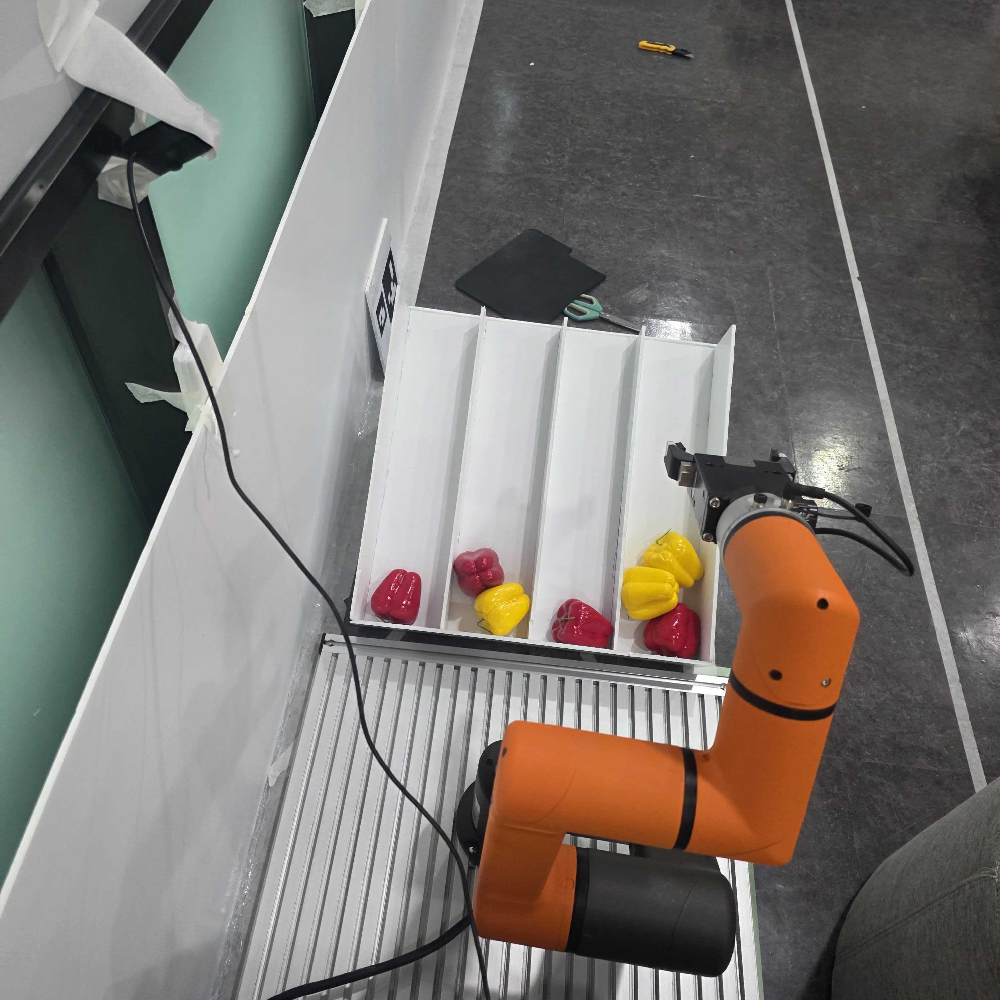
네 구역의 빨강·노랑 판별
작업 ID·명령·완료 상태
티칭 경로와 그리퍼 동작
카메라의 네 구역에서 빨강·노랑 과실을 판별하고, 다음에 집을 구역을 선택하도록 구현했습니다. 로봇의 파지·색상별 배출·복귀 동작을 직접 티칭하고, Modbus TCP로 작업 명령과 완료 상태를 주고받았습니다.
작업 ID로 중복 처리를 막고, 취소 요청은 현재 동작과 복귀를 마친 뒤 종료하도록 구성했습니다. ROS 2 관제와 작업 요청·진행·결과를 연결해 실물 통합 시험을 완료했습니다.
자세 인식·자동형 모니터암
자세 AI/모니터암 앞뒤 제어/하드웨어 모델링
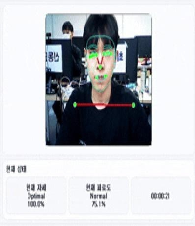
정상 자세에서는 사용자 위치를 추종하고, 비정상 자세에서는 현재 위치를 유지합니다. 정자세·비대칭·거북목·턱 굄을 구분하는 AI와 모니터암 제어를 연결했습니다.
교육과정 전체 1위 / 임베디드 소프트웨어 경진대회 결선 진출
본인 구현 영역 · 자세 판단을 위치 조절의 실행 조건으로 연결
초기 모델은 정자세를 거북목으로, 눈·머리 주변의 손동작을 턱 굄으로 오인했습니다. 신체 기준점으로 계산하는 자세 입력 항목인 특징량을 8개 → 10개로 재설계하고 혼동 데이터를 보강했습니다.
거리 특징을 어깨너비로 정규화하고 정상 자세 기준값을 보정했습니다. 최근 30프레임을 읽는 GRU로 순간 동작을 구분했습니다.
네 가지 자세 · 단일 세션 · 1,066개 예측 구간
자세 인식·자동형 모니터암
앞뒤 제어/하드웨어 모델링/하중을 고려한 목표 제한
사용자 위치 추종
현재 위치 유지
모니터암을 모델링하고 사용자 위치에 따라 앞뒤로 움직이는 제어를 구현했습니다. 역기구학으로 목표 관절각을 계산하고, 자세 AI와 유효한 센서 입력을 이동 조건으로 연결했습니다. 관절 운동을 시뮬레이션에서 확인한 뒤 실물에 적용했습니다.
목표 위치 입력
역기구학·토크 조건
모니터암 위치 조절
디스플레이 장착 후 특정 자세에서 관절 부하가 증가해 이동 범위가 제한됐습니다. 자세별 중력 모멘트를 분석하고 역기구학에 토크 조건을 반영해, 허용 부하를 초과하는 자세 후보를 제한했습니다.
최종 보고서의 20초 내 정착 기준
STM32 영상 추적 팬·틸트 짐벌
모터 제어/PyBullet 시뮬레이션/3D 프린팅
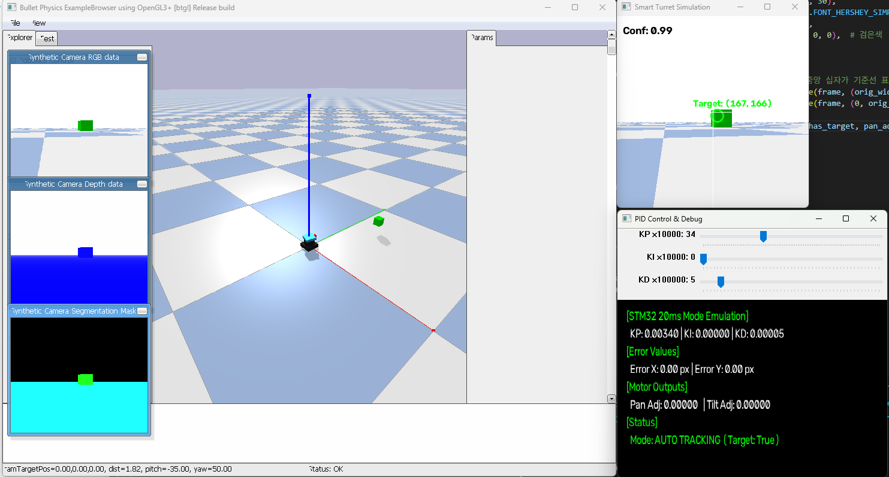
영상에서 검출한 대상의 위치를 팬·틸트 구동으로 연결하는 시제품입니다. 제어 시스템은 STM32H743XI 단일 보드로 구성했습니다.
모터 제어 코드를 작성하고, PyBullet에서 관절 운동과 추적 동작을 확인하는 시뮬레이션을 구현했습니다. 기구를 3D 프린팅해 실물 구동부를 제작했습니다.
영상 처리·제어 명령의 지연과 구동계 응답을 구분해 검토했습니다. 병목 분석 이후의 최종 실물 성능 개선율은 별도 재시험으로 확정하지 않았습니다.
카메라·AI·전체 코드 통합·성능시험은 팀의 다른 담당 파트와 연결했습니다.
자동 분류·창고관리
전체 시퀀스 프로그래밍/복귀 위치·공급 순서 개선
센서 입력
서보·실린더 상태
잔여 소재 완료 조건
센서 입력과 서보·실린더 상태를 연결해 공급·분류·적재·창고 비움의 전체 시퀀스를 구현했습니다.
마지막 소재를 처리하기 전에 종료되는 문제는 공급 종료와 잔여 소재 처리 완료를 구분하도록 수정했습니다.
서보의 중간 복귀 위치를 조정하고, 다음 소재 공급과 분배 동작을 겹쳐 수행하도록 변경했습니다.
| 조건 | 전체 공급 + 창고 비움 |
|---|---|
| 중간 복귀 위치 60 mm | 173.3초 |
| 중간 복귀 위치 140 mm | 155.3초 |
| 140 mm + 공급 병렬화 | 152.8초 |
동일 시험 시나리오에서 기준 대비 합산시간을 20.5초, 약 11.8% 줄였습니다.
교육 장치의 전체 공급 + 창고 비움 시간입니다. 단품당 공정 시간이나 반복 시험 평균과 구분합니다.
레이저 스펙트럼 기반 물질 분류
데이터 수집 보조/MATLAB 전처리/분류 모델링·튜닝
레이저 스펙트럼 데이터로 물질을 분류하는 연구에 참여했습니다. 데이터 수집을 보조하고, MATLAB으로 데이터를 전처리해 학습 입력을 구성했습니다.
초기 CNN의 성능 개선을 위해 DenseNet 적용을 제안하고 모델링을 진행했습니다. 학습률, 가중치 감쇠, Dropout 설정을 조정하며 검증 결과를 확인했습니다.
CNN은 신호의 특징을 학습하는 합성곱 신경망입니다. DenseNet은 여러 층의 특징을 연결하는 구조로, 초기 모델의 개선안으로 검토했습니다.
레이저 스펙트럼
MATLAB 학습 입력
CNN · DenseNet 적용 제안
학습률 · 가중치 감쇠 · Dropout